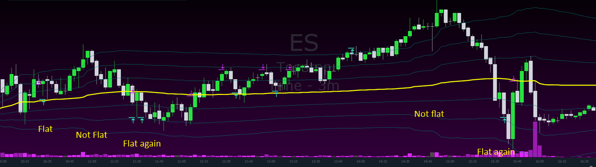
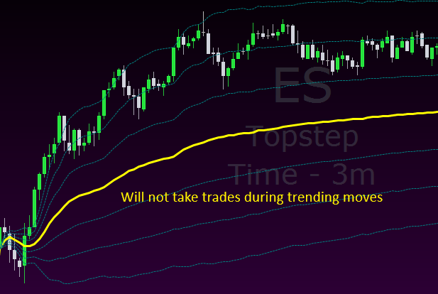
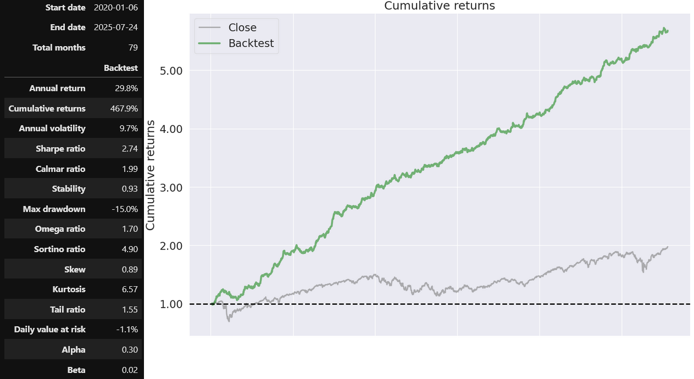
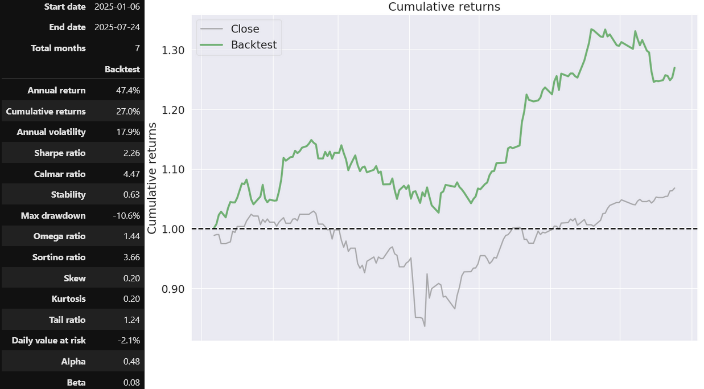

AVWAP Mean Reversion

The AVWAP Mean Reversion strategy is a professional auto-anchored VWAP trading system. Entry is based on customizable standard deviation bands, allowing you to select which band triggers trades.
Special Features
- Customizable standard deviation bands for precise entries.
- Flat-band logic: trades only taken when the main AVWAP band is flat.
- Built-in risk management for professional trading.
- Highly configurable for different market conditions and timeframes.
- Auto-anchored to New York, London, and Asia open sessions (customizable in future updates).

The "IsFlat" logic avoids trades during trending moves, enhancing performance in sideways markets.
Backtest Results
Backtests were performed on the 3-minute timeframe and electronic trading hours on the e-mini S&P Futures (ES). Fees are included. The benchmark labeled 'Close' represents the actual S&P chart. No compounding was applied, and both tests started with $150,000, risking ~$1000 per trade.
The first backtest covers 2020 to July 2025, using 1-minute bars with every price inside considered, ensuring precise simulation of trades.

The second backtest spans January 2025 to July 2025, using tick-last data for high accuracy. Performance varies by market conditions, as expected with any real trading strategy.

Parameters used for these tests are provided upon purchase. Users are encouraged to backtest themselves to understand performance in different market conditions. This strategy excels in choppy, sideways markets and can complement other strategies effectively.
Traders often find sideways days psychologically challenging. AVWAP Mean Reversion provides a disciplined approach to trade these conditions successfully.
Price: $199